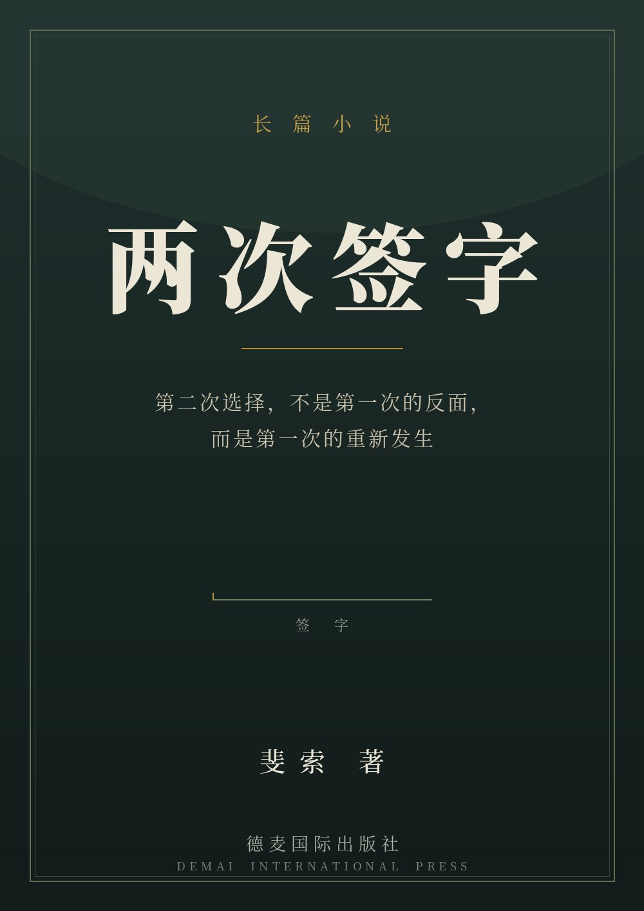

青沤区文化馆的桌上摊着一份文件，最后一页"单位负责人"那一栏空着。按过去的习惯，那里该落沈竟成三个字；如今，那位挂职离任的老馆长把这扇门连同钥匙一起留给了方云迟，只说了四个字："你看着办。"
方云迟在这间屋子里坐了十二年。他知道那一栏不只是一个空格——它连着一份名单，一份名单连着一些人的活路，还连着那支旧钢笔上被沈竟成的指甲磨了几十年的一道细划痕。第一次，他在压力里落了笔，却把自己的名字写进了不属于自己的位置。这一签，成了往后所有事的起点。
有些字，是要用冬天才写得出来的。—— 沈竟成 · 写在信边的一句话
接下来的日子，是一枚作废章、一封没有落名的旧信、一张迟迟不肯填满的第二张表，和李青弋每天四点来续水、打开的那本值班记录。方云迟把该签的位置一直空着——那"空着"本身，成了另一种签字。
直到又一个冬天。同一间屋子，同一封信，同一个杯子压着同一个角。不同的是：第一次坐下去，他浑身都是往外逃的力；这一次，他把自己按在椅子上，按得很实。他没有再接过那支替别人写字的笔。沈竟成终于在自己的信上落下了自己的名字；方云迟也终于把"方云迟"三个字，签进了他本该在的那一栏——不是"单位负责人"，是"科室审核"。
两个名字第一次没有互相遮住，各自回到了该在的位置上。这不是一个关于翻案或救赎的故事，而是关于一个人如何把自己放回自己该站的地方：他的第二次选择，不是第一次的反面，而是第一次的重新发生。
同一个问题，九个方向轮番追问，普通基底与 SDE 提智基底同台对照。带上你自己的问题，去问下一问——免费，无需注册，浏览器直接用。
免费品尝金点子发生器 → 更多 SDE 智能体